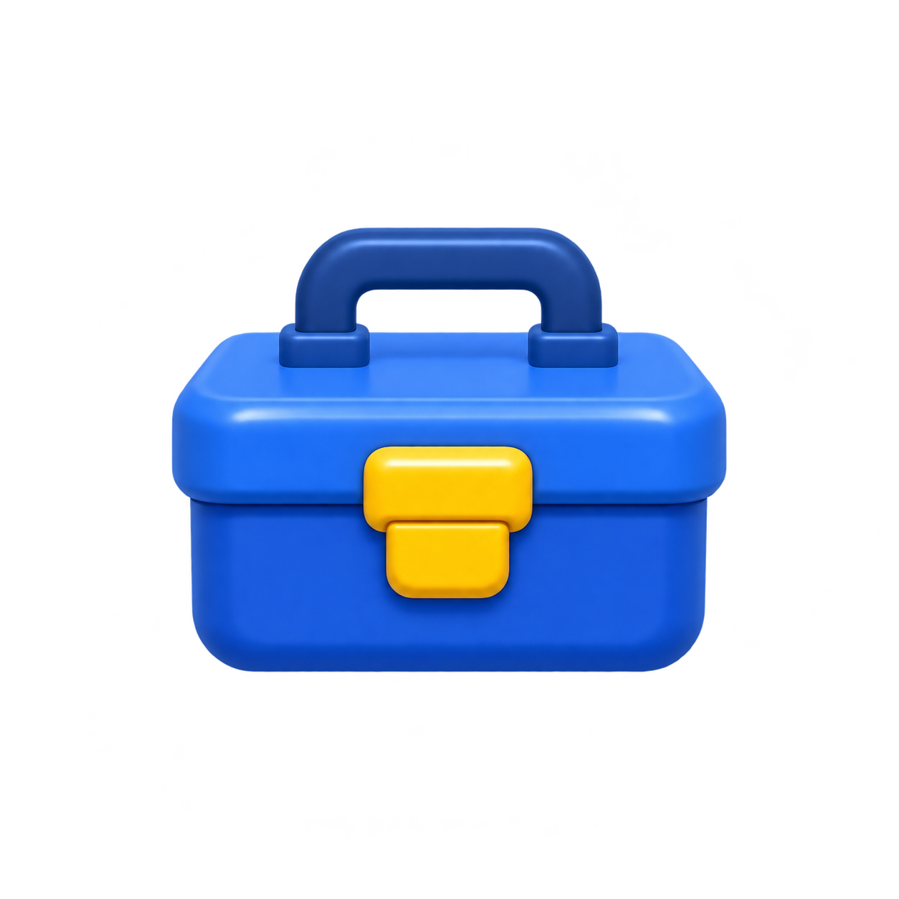
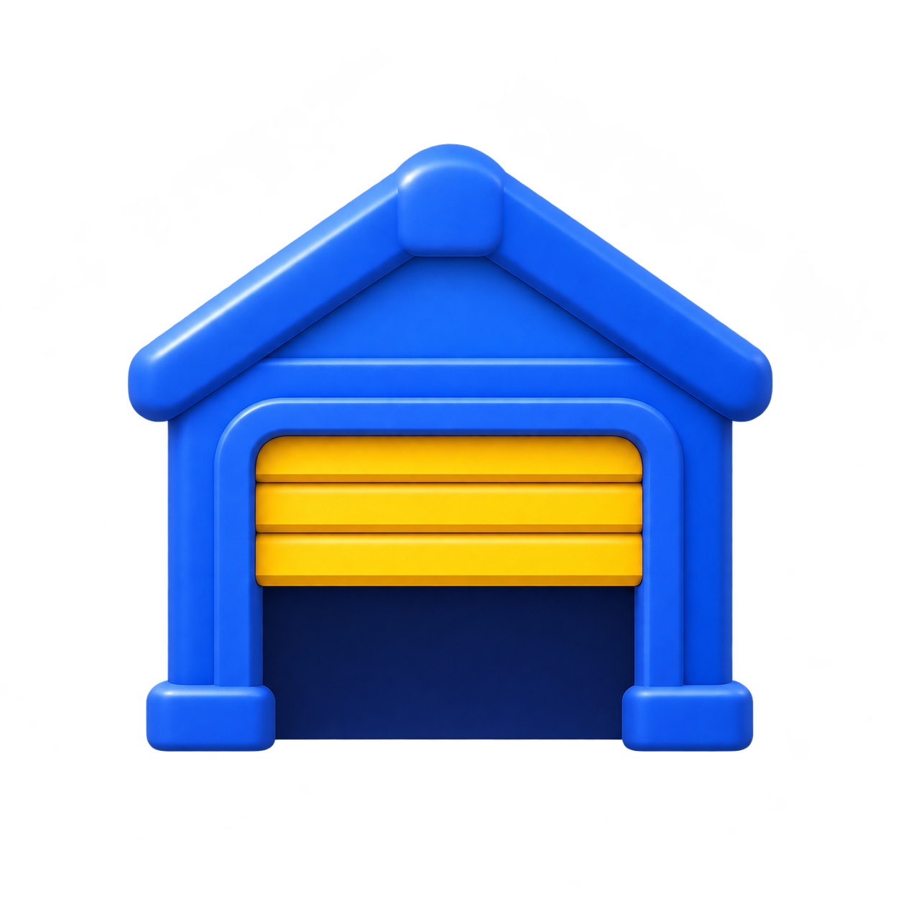
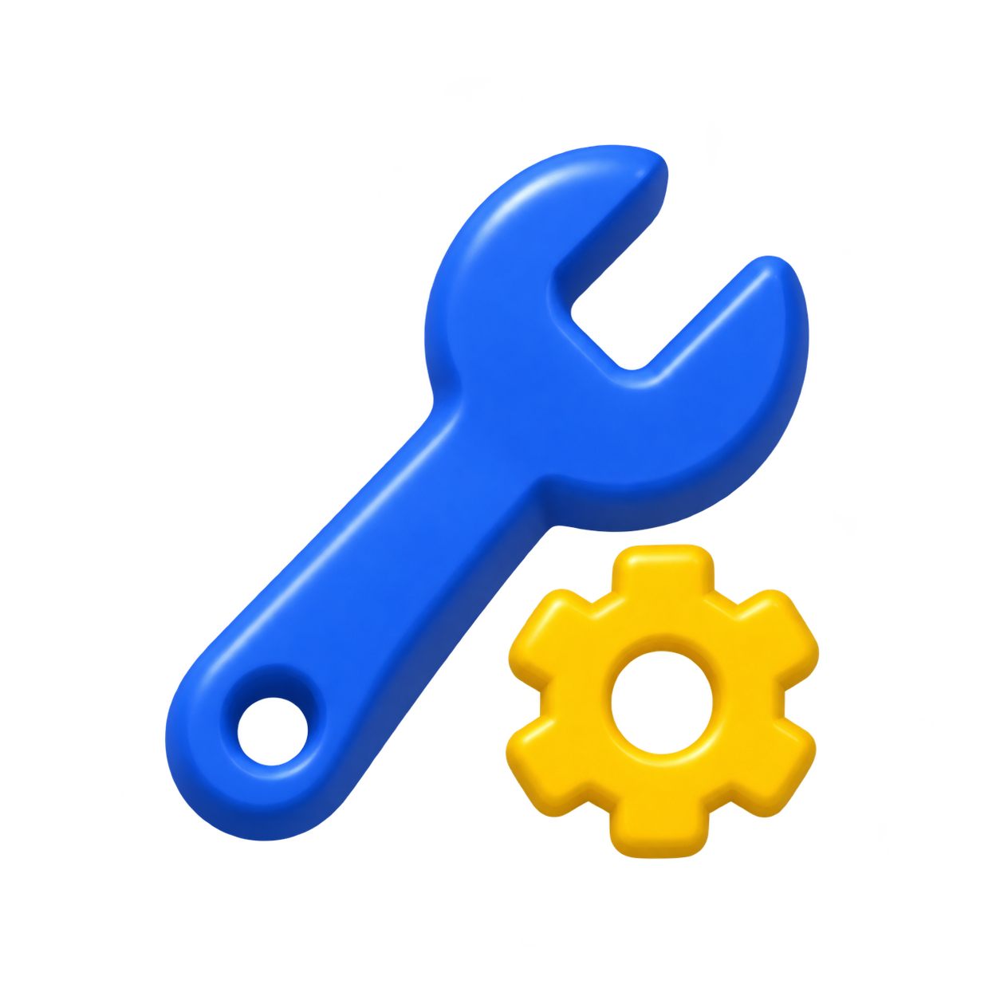

scrap
SalvageHUD.Resources.Scrap
흰 패널 · 남색 글자 · 파란 기본 버튼 · 노란 부품 · 초록 확인
SalvageHUD.Resources.Scrap
SalvageHUD.Resources.ResearchData
WorldProgressHUD.Panel.Home

MissileBaseHUD.BaseBanner.OpenInventory
WorldProgressHUD.Panel.World1 / World2
PetMissileHUD.Panel.Focus

ScoutBuggyHUD.OpenGarage

MissileBaseHUD.Inventory.Roll